第 6 讲 · 模型选择：泛化、诊断与调参
如何选出泛化更好的模型？
第5讲，我们比较了模型的分类、排序与概率表现。现在固定评价指标，继续问：怎样改进模型，才能让新样本上的表现更好？
泛化（generalization）：模型对未参与训练的新样本的预测能力。
图中，训练时见过1、4和普通写法的7。新卡片是带横杠的7，写法不同，类别没变。模型还能把它认成7吗？
本讲先比较训练与验证成绩，再诊断和改进模型，最后检验选择是否可靠。
第 6 讲 · 模型选择：泛化、诊断与调参
第5讲，我们比较了模型的分类、排序与概率表现。现在固定评价指标，继续问：怎样改进模型，才能让新样本上的表现更好？
泛化（generalization）：模型对未参与训练的新样本的预测能力。
图中，训练时见过1、4和普通写法的7。新卡片是带横杠的7，写法不同，类别没变。模型还能把它认成7吗？
本讲先比较训练与验证成绩，再诊断和改进模型，最后检验选择是否可靠。
第 6 讲 · 模型选择：泛化、诊断与调参
模型训练完以后，要用来预测什么？如果只是复现已有样本，训练成绩可以反映这一点；但实际任务通常要预测未见过的客户、图片或记录，这就要求模型具备泛化能力。
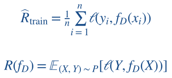
D是训练数据，fD是从D学到的模型；n为样本数，ℓ为单样本损失。
P表示未来样本的目标分布，E表示对该分布取期望。
训练平均损失称为经验风险（empirical risk）；目标分布上的期望损失称为泛化风险（generalization risk）。
如何评估泛化能力？用能代表未来、且未参与训练的样本计算平均损失，估计泛化风险。因此，要预先划分数据，将用于学习的数据与用于评价的数据分开。
💭 如果测试图片全来自旧设备，部署却换了新设备，测试误差还能直接代表部署表现吗？
未必。采集条件变了，测试样本可能不再代表部署分布。
第 6 讲 · 模型选择：泛化、诊断与调参
训练集（training set）
拟合模型参数与预处理规则。
验证集（validation set）
比较模型、特征、超参数或阈值。
测试集（test set）
方案确定后评价；不参与拟合与选择。
训练与验证合称开发数据（development data）；测试数据留作最终评价。
留出集（holdout set）：不参与本轮拟合的数据，可作验证或测试；名称不决定用途。
怎样划分？近似独立样本可从6∶2∶2或8∶1∶1起步。预测新用户：同一用户的记录不跨训练、验证和测试集。预测未来：按时间划分，用过去训练、用后续数据验证和测试。
没有统一最优比例。测试集要代表未来样本，并有足够评价人数。
发布方的划分参考：不是通用配方。
| 数据集（单位） | 任务类型 | 总量 | 训练 Train | 验证 Val | 测试 Test | Train∶Val∶Test |
|---|---|---|---|---|---|---|
| MNIST（张） | 手写数字识别 | 70,000 | 60,000 | / | 10,000 | 6∶/∶1 |
| CIFAR-10（张） | 物体图像分类 | 60,000 | 50,000 | / | 10,000 | 5∶/∶1 |
| IMDB（条影评） | 文本情感分类 | 50,000 | 25,000 | / | 25,000 | 1∶/∶1 |
| ImageNet-1KILSVRC2012，张 | 图像分类 | 1,431,167 | 1,281,167 | 50,000 | 100,000 | 约25.6∶1∶2 |
| Flowers-102张；每类10张训练样本 | 花卉图像分类 | 8,189 | 1,020 | 1,020 | 6,149 | 约1∶1∶6.0 |
| UCI HAR手机传感器，段 | 人体活动识别 | 10,299 | 7,352 | / | 2,947 | 约2.5∶/∶1 |
Flowers-102每类仅用10张图片训练。划分用途明确后，还要问：换一次训练／验证分配，分数会变多少？
💭 若正类仅占1%，留出10%作测试就一定够评价召回率吗？
不一定。应看测试集中实际有多少正类；例如1000条数据留出100条测试，按1%仅约1个正类，召回率会极不稳定。
第 6 讲 · 模型选择：泛化、诊断与调参
即使模型设置不变，换一次训练／验证分配，分数也可能变化。只看一次划分，难以判断结果对这次分配有多敏感。
交叉验证（cross-validation, CV）在开发数据内部轮换训练与验证，汇总多轮成绩来评价训练流程。K折交叉验证（K-fold cross-validation）将开发数据分为K折，每次用其中1折验证，其余K−1折训练。右图为五折交叉验证（5-fold cross-validation，K=5）：每次4折训练、1折验证，共拟合5次不同模型；最终测试集不参与。
留一交叉验证（Leave-One-Out, LOO）是每折只留1个样本验证：n个样本共拟合n次，每次用n−1个训练。训练数据用得更多，但计算开销大，评价未必更稳定。
💭 为什么通常在开发集内部做交叉验证，而不从测试集中再划出验证集？
开发集内做CV，可让样本轮流参与训练与验证，同时保留足够的独立测试数据。从尚未使用的测试集预先划出验证集也可以，但划出的部分就属于开发数据，剩余测试样本会减少。
选定配置后，通常在全部开发数据上重训。
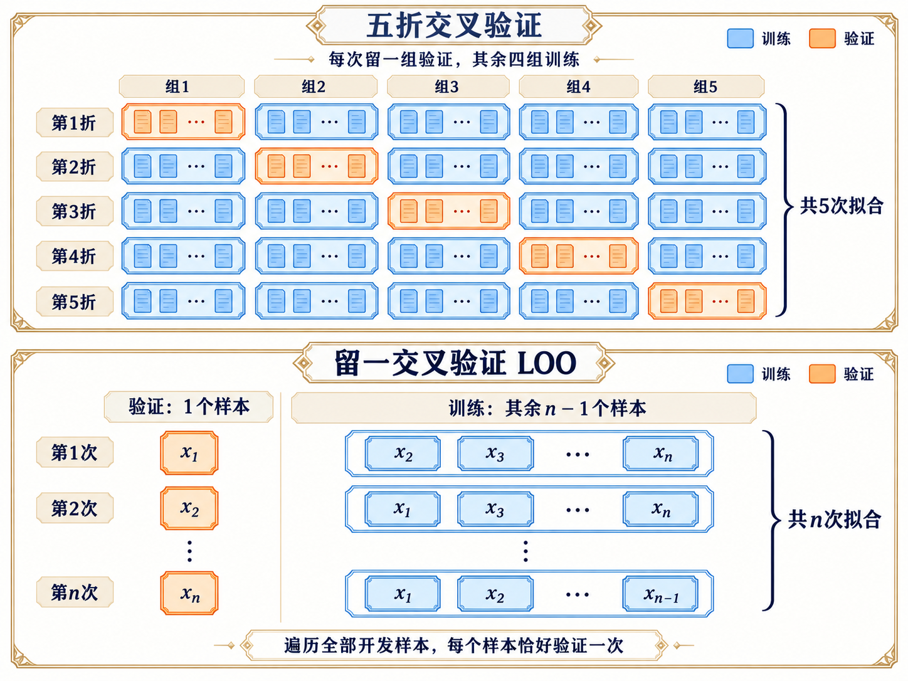
LeavePOut。第 6 讲 · 模型选择：泛化、诊断与调参
固定标准化＋Logistic回归流程与模型设置，把1437条开发数据分成5组。右图每一行都重新拟合：蓝色4组训练，橙色1组验证。
每轮只在橙色那组计算准确率，得到右侧的一个点。这五个数都是验证分数，不是训练成绩，也不是同一个模型反复评分。
均值96.80%概括五次结果的平均水平；折间标准差0.74个百分点描述五个分数有多分散，数值越大，轮次间波动越大。
👀 最高一折的97.91%，能代表整个流程的表现吗？
不能。最高一折只代表该次训练／验证分配，不能替代五轮汇总，更不能充当最终独立测试成绩。
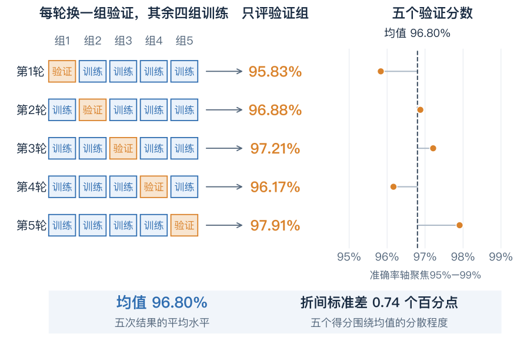
第 6 讲 · 模型选择：泛化、诊断与调参
比较K-Fold与LOO的取舍；右图仅以5-Fold（K=5）举例：同样1437条开发数据，模型与标准化设置不变。本次LOO多答对6个，但不据此认定它总是更好。
| 比较项 | K-Fold | LOO |
|---|---|---|
| 训练用量 | 约(K−1)/K；5-Fold约80% | n−1条，接近全量 |
| 计算成本 | 每个候选拟合K次 | 通常每个候选拟合n次 |
| 主要取舍 | 折数较少时成本低；训练量偏少可能使评价偏悲观 | 少留出数据，但评价不保证更稳定 |
| 适用场景 | 常规选模、候选多或训练慢 | 样本很少、单次训练便宜 |
常规任务可先用5折或10折。
回顾第3讲p20：10折CV选阶。前面已区分数据用途；接下来分别看预测新对象与预测未来记录时，训练和验证应怎样隔离。
第 6 讲 · 模型选择：泛化、诊断与调参
为什么按用户分组？同一用户的记录往往相似。若分到训练和验证两侧，模型可能只是“认出了老用户”，使验证成绩偏乐观。要检验对新用户的泛化能力，验证用户就不应出现在训练集中。
组（group）表示同一来源的多条记录，例如同一患者。GroupKFold根据每行的组号划分，保证本轮训练与验证的组互不重叠。
group_cv = GroupKFold(n_splits=5)
for train_idx, valid_idx in group_cv.split(
X, y, groups):
train_groups = set(groups[train_idx])
valid_groups = set(groups[valid_idx])
assert train_groups.isdisjoint(valid_groups)💭 组号互斥，能证明它就是真实身份吗？
不能。断言只检查给定组号互斥，身份是否可靠需要回到数据来源核查。
assert仅核对两侧组号互斥。它不能核实原始组号是否正确，也不能保证两侧来自相同分布。
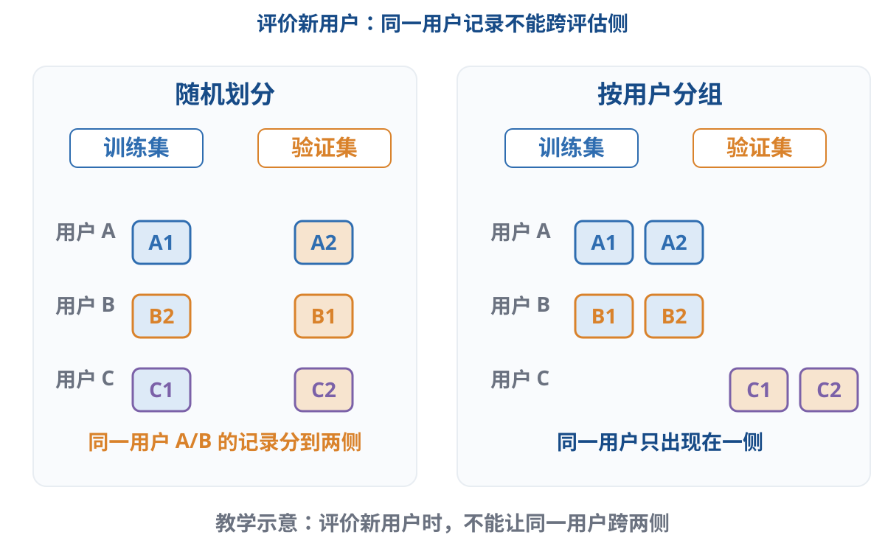
第 6 讲 · 模型选择：泛化、诊断与调参
预测未来租车需求时，评价也应用过去训练、用后续数据验证。右图展示一次按时间留出。
| 方式 | 训练历史怎样使用？ |
|---|---|
| 按时间留出 chronological holdout | 固定一个分界，只评价一次 |
| 扩展窗口 expanding window | 分界后移，保留此前全部历史 |
| 滑动窗口 sliding / rolling window | 分界后移，只保留近期历史 |
💭 如果旧数据里的规律已变化，保留全部历史一定更好吗？
不一定。旧规律可能失效，但减少历史也会损失样本；应在开发数据上比较与部署一致的窗口方案。
UCI单车真实日租赁量，731天。数据与实际日期表
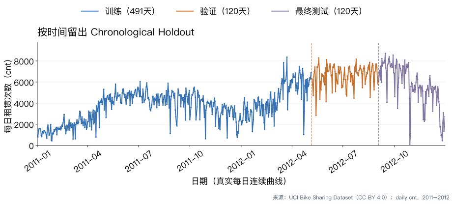
先做一次未来检验：可按时间留出；需要多轮检验：再根据是否保留全部历史，选择扩展或滑动窗口。
历史规律较稳定时，可用扩展窗口积累样本；
更重视近期规律时，可用滑动窗口舍弃旧数据。
下一页看两者怎样前移。
第 6 讲 · 模型选择：泛化、诊断与调参
扩展窗口保留历史，滑动窗口移走旧数据。每轮中，两种方案使用相同的后续60天验证块，只改变训练历史的长度；图中展示第1轮与第3轮。
TimeSeriesSplit(n_splits=3, test_size=60)默认扩展窗口；增加max_train_size=180，本例每轮只用最近180天。test_size是每折评分记录数，不会自动完成60步预测。
💭 滑动窗口第3轮舍弃了哪些历史？怎样判断舍弃是否值得？
舍弃了该折验证起点前、最近180天之外的开发记录。应按部署的更新频率和信息可得性，在相同开发验证日期上比较效果与成本，而非只凭曲线看起来不同。
同一真实曲线、相同坐标；阴影标记窗口，灰线为本轮未使用的记录；不是预测区间。最后120天始终不参与CV。三轮索引与窗口图
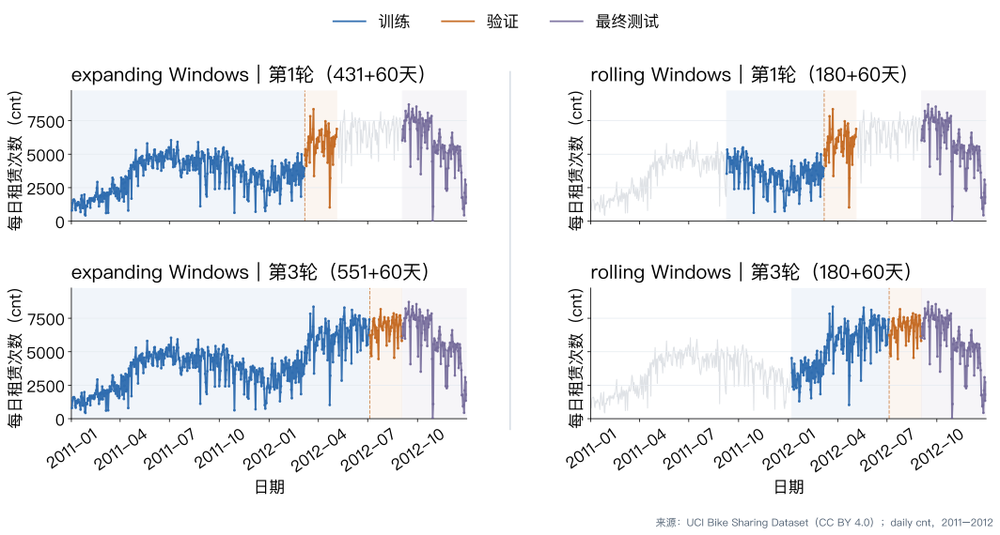
第 6 讲 · 模型选择：泛化、诊断与调参
沿用单车数据，假设在每天开始时预测随后7天总租赁量（不含当天），输入只用此前已知信息。
若5月6日开始验证：
| 预测日 | 标签覆盖日期 | 此时是否完整？ |
|---|---|---|
| 4月28日 | 4月29日–5月5日 | 已完整 |
| 4月30日 | 5月1日–5月7日 | 尚未完整 |
因此，先不使用4月29日–5月5日这7条近期记录训练；图中通过间隔（gap）将它们排除。
TimeSeriesSplit(n_splits=3,
test_size=60, gap=7)总结
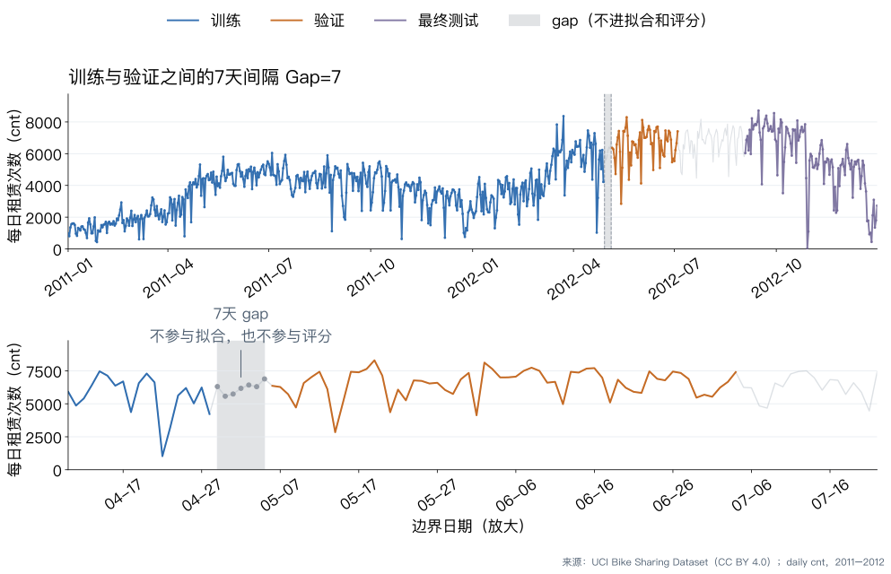
第 6 讲 · 模型选择：泛化、诊断与调参
前面用划分与CV评价模型的泛化表现。现在进一步问：固定建模流程，训练样本的变化会让预测结果波动多大？
自助法（Bootstrap）从现有n条训练记录中，有放回地抽n条，重新训练模型；重复B次，观察同一输入下的预测波动。
什么时候用：难以反复采集新的训练数据，又想估计模型对训练样本变化的敏感程度时。后续还可汇总这些模型的预测，形成Bagging（自助聚合）。
本例：Iris两类共100条，仅用花瓣长度分类；固定70条训练、30条独立留出。每份重抽70条，重新拟合标准化与Logistic回归，共200次。
名字的由来：bootstrap原指靴子提环，借自“拽着自己的靴带把自己提起来”，比喻依靠现有样本重抽。它并未创造新的独立数据。
💭 200次重训后的预测差异，能全部归因于训练样本变化吗？怎样设计实验才能区分原因？
不一定，算法自身的随机性也可能带来差异。应固定模型设置和预处理流程（每轮重新拟合），若算法含随机性则固定其种子，只改变重抽样训练数据。
第 6 讲 · 模型选择：泛化、诊断与调参
固定花瓣长度为4.8 cm，让200个重训模型分别预测属于Iris virginica（类别1）的概率。右上图的紫色圆点标出前30个模型在该输入处的预测概率。
本次预测均值为43.7%，预测概率的标准差约6.17个百分点：输入和训练规则相同，重抽训练集不同，预测也不同。
Bootstrap标准误差（standard error, SE）用这些重训结果的标准差，估计固定输入下预测概率估计量的抽样波动：
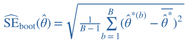
本例θ̂是原训练集模型的预测概率；θ̂*(b)是第b个重训模型的预测概率，横线为B次预测的平均。此处不是准确率，也不是标签本身的随机性或置信区间。
本例说明：即使输入和建模流程固定，训练样本的变化仍会带来预测波动；Bootstrap用重抽样近似评估这种敏感程度，标准误差越大，表示该输入处的预测越不稳定。
第 6 讲 · 模型选择：泛化、诊断与调参
| 本课中的用途 | 怎样训练与比较 |
|---|---|
| CV：评价、选择模型 | 轮换训练与验证，比较验证成绩 |
| Bootstrap：观察训练波动 | 有放回重抽训练集，每份重新拟合 |
| OOB：内部评价 | 每轮用未抽中的原训练记录评价该轮模型 |
某轮重抽没选中的原训练记录称为袋外样本（out-of-bag, OOB），可用于本轮模型的内部评价。右图第1轮有28条袋外记录。最终测试数据仍单独保留。
n是原训练记录数；每次不选中某条记录的概率为1−1/n，连抽n次均未选中得到上式。箭头上的n→∞表示n增大时的极限。36.8%是大样本下的期望比例，并非每轮固定。
通过集成改善泛化：Bagging将重抽训练得到的模型进行投票或概率平均；随机森林在此基础上还引入特征随机性。
💭 袋外记录随每轮改变，为什么不能把它当作永久封存的测试集？
每条记录可能在某轮袋外、另一轮袋内，且OOB结果可能被用于调参；它不是从整个选择过程永久隔离的一批数据。
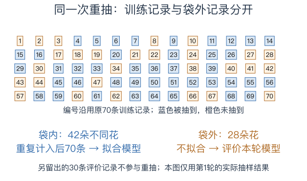
第 6 讲 · 模型选择：泛化、诊断与调参
类别不平衡时，多数类可能主导模型的学习，使少数类识别不足。类别重采样（Class Resampling）通过改变训练数据中的类别比例，尝试改善这种情况。
| 方法 | 处理方式与限制 |
|---|---|
| 随机过采样 Random Oversampling | 重复不足类别的记录；可能反复记住少数样本 |
| 随机下采样 Random Undersampling | 减少多数类记录；更省计算，但可能丢掉有用信息 |
| SMOTE | 在同类近邻之间插值合成记录，下一页解释 |
采样比例不必是1∶1，它也是超参数。用交叉验证比较不采样、不同方法和比例，根据任务目标选择，不能只看数量是否相等。
⚠️ 把训练集采样到1∶1后，验证集也应该改成1∶1吗？
不应该为提高分数而改变验证分布，评价数据应代表目标使用条件。重采样只作用于当前训练折，最终测试数据仍单独保留。
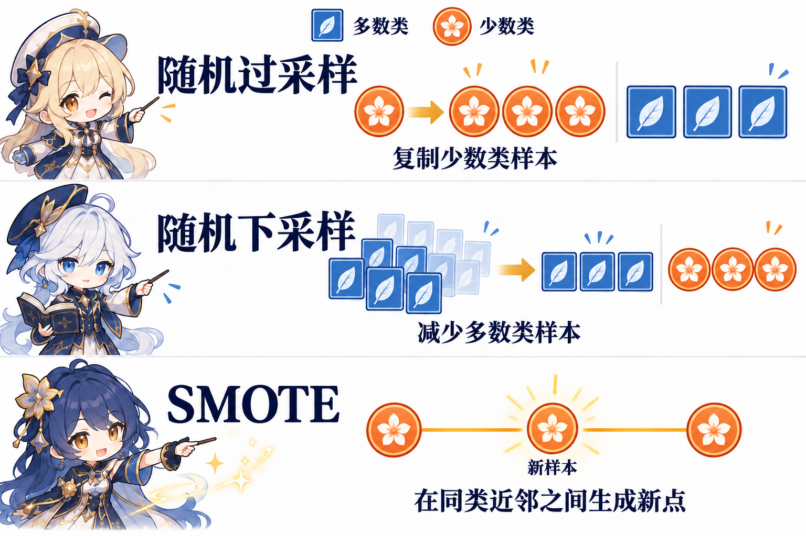
第 6 讲 · 模型选择：泛化、诊断与调参
合成少数类过采样技术（Synthetic Minority Over-sampling Technique，SMOTE）从目标类别的一条记录xᵢ出发，在其同类k近邻中随机选xⱼ，再在线段上生成新点：
k是候选同类近邻数，xᵢ、xⱼ是特征向量。λ决定插值位置：每生成一个新样本，从[0,1)均匀随机抽取一次，不用寻找“最佳λ”。右图固定λ=0.4，表示从xᵢ向xⱼ走40%，生成点沿用该类标签。
通过交叉验证选择k和采样比例，λ则随机生成。
插值合理性需要检查。先在训练折内缩放特征；类别编码不能直接当连续数值插值。离群点或复杂类别边界可能造成不合理的新样本。
💭 两个同类样本之间的点，为什么不一定仍是合理的同类样本？
同一类可能分布在不同区域，连接线可能穿过另一类或没有真实样本的区域。“同类邻域中的插值仍合理”是一项假设，不是新点标签的独立证据。
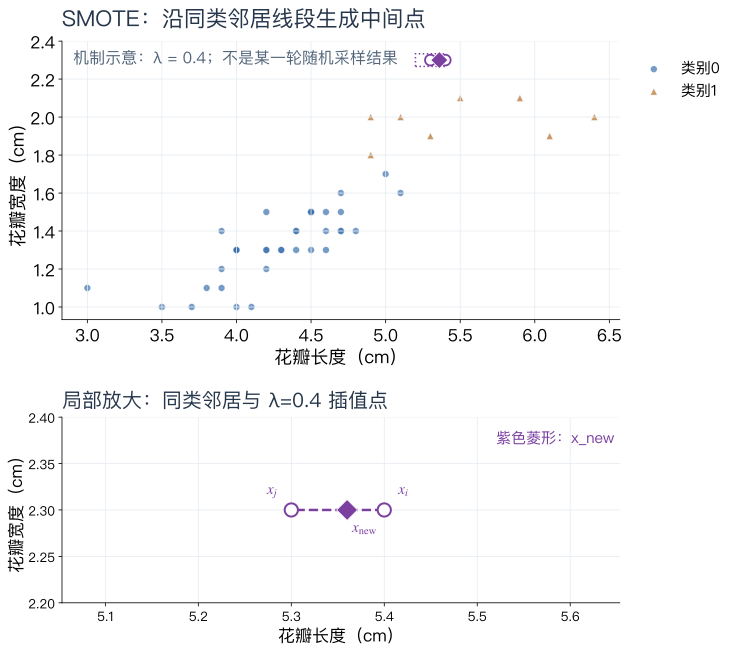
第 6 讲 · 模型选择：泛化、诊断与调参
前面用SMOTE在特征之间插值；图像数据增强（Image Data Augmentation）利用图像任务的知识，直接构造仍符合原标签的输入变化。
| 方案 | 训练行数 | 验证准确率 |
|---|---|---|
| 未增强 | 5000 | 93.85% |
| A：左右平移 | 15000 | 94.65% |
| B：旋转±10° | 15000 | 95.70% |
| A+B：平移与旋转 | 25000 | 95.80% |
同一KNN、同一验证集：本次A+B较未增强错误数减少31.7%。组合不保证更好；新增行不是独立新样本。
💭 小幅平移或旋转，为什么可能帮助识别新笔迹？
任务希望对小幅位置和倾斜变化保持识别稳定。变体使近邻库包含同一数字在不同位置或倾角下的外观，查询图有机会找到更相似、同类别的邻居；这是合理性解释，不是对任意变换的保证。
第 6 讲 · 模型选择：泛化、诊断与调参
从纸质表格到识别数据。NIST收集手写样本，用于光学字符识别（Optical Character Recognition，OCR）研究，让机器读取数字和文字，比较不同识别系统。
谁写的，怎样收集？普查局工作人员和高中生按要求填写专门的样本表。研究人员以约300 dpi扫描，再切分字符并核查标签。
两群人的字，识别难度不同。MNIST作者发现，工作人员的数字较容易识别，高中生的较难。用一群人的字训练、另一群人的字测试，还会引入书写风格的分布差异。
MNIST重新混合两种来源，使训练和测试都包含两类书写者，并确保训练集与测试集的书写者不重叠。
与按组划分的联系：如果目标是识别陌生人的字，就应按书写者隔离数据，检验模型能否泛化到新用户。
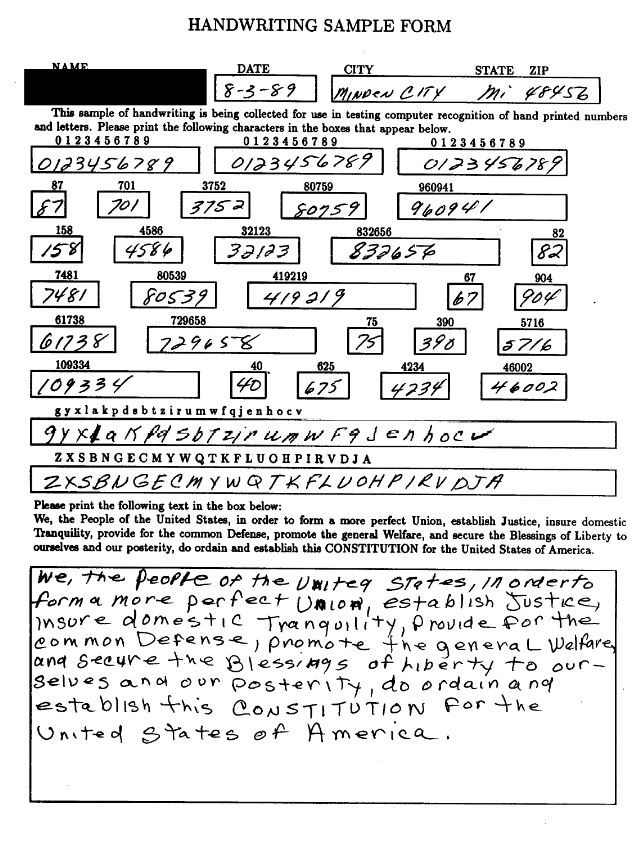
第 6 讲 · 模型选择：泛化、诊断与调参
增强策略取决于任务：变换后类别是否还正确？外观是否符合使用场景？关键笔画、轮廓或目标是否还在？
几何变化：平移、旋转、翻转、裁切与缩放。
外观变化：亮度、对比度、颜色扰动，以及适量噪声、模糊或遮挡。
先检查样本及标签，再用开发验证比较变换强度与组合；不能只凭一张“看着还行”的图判断有效。
💭 如果任务改为按颜色分类，颜色扰动还适合吗？
如果标签由颜色决定，把红色物体扰动成蓝色会改变类别，不能沿用原标签。只有仍保持颜色类别、且符合实际光照条件的轻微明暗变化，才可作为候选，并需验证效果。
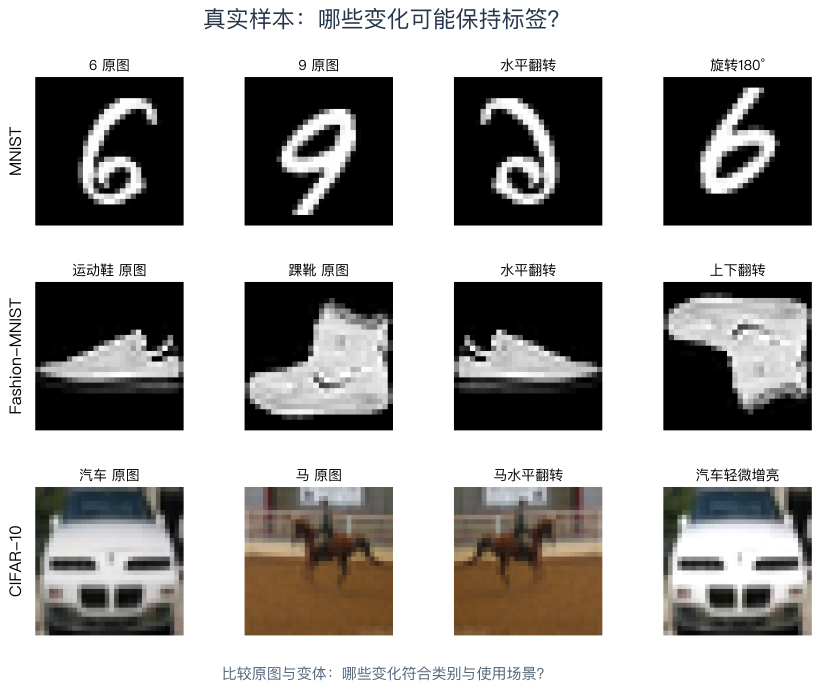
第 6 讲 · 模型选择：泛化、诊断与调参
回到8×8 digits：固定1077条训练、360条开发验证。Logistic回归错10条，其中数字9错3/36条；两张把9认成1。
假设：用局部相似笔迹比较，能减少这些混淆吗？保留相同数据和标准化，只把分类器换成4近邻（距离加权），不同时做增强。
| 分类器 | 全部错误 | 数字9错误 |
|---|---|---|
| Logistic回归 | 10/360 | 3/36 |
| 4近邻 | 9/360 | 1/36 |
修正7条旧错，却新增6条：总错误仅少1条。不能只挑改对的图片，也不能据一次划分断言模型稳定更好。
💭 这个对照能证明，原来的错误就是线性边界造成的吗？
不能，替换模型改变了整个决策规则，一次小样本对照不能确认唯一原因。应在开发数据内固定CV比较总体和分组结果，方案确定后再做独立评价。
第 6 讲 · 模型选择：泛化、诊断与调参
学习曲线（learning curve）固定模型与CV划分，只改变训练样本数。本例用digits，比较14个训练量，每个都做相同的5折验证。
横轴是每折训练样本数。5条细线为各折验证结果；粗橙线为验证均值，蓝色虚线为训练均值。
观察：训练准确率始终接近100%；验证均值从约90.3%升到96.9%，两者差距缩小。在已实验范围内，增加数据总体有帮助。
但接近上限时提升趋缓：最后一次从1091增到1149条，验证均值反而从约97.0%略降至96.9%。各折有波动，并非每加一批数据都会更好。
💭 继续收集同分布样本值得尝试吗？还需考虑什么？
值得尝试，但应结合采集成本、代表性和错例分析判断；图中验证均值总体改善，不保证继续加数据会提升多少。
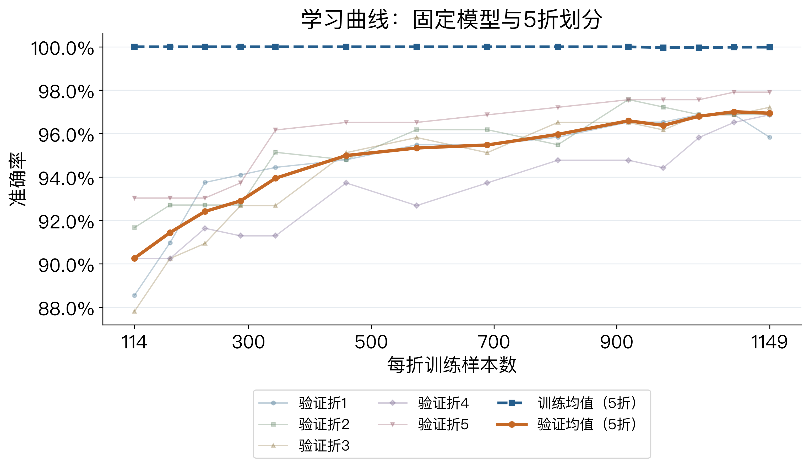
第 6 讲 · 模型选择：泛化、诊断与调参
上一页增加训练量；本页固定原训练集，用Bootstrap观察增加复杂度的影响：从30条记录中有放回抽30条，重复40次；每份样本分别拟合1、4、15阶，并在同一240条独立留出记录上评价。
1阶 → 4阶：直线不能表达主要弯曲；增加到4阶后，平均留出MSE从0.2441降至0.1673，本次增加表达能力有帮助。
4阶 → 15阶：平均重抽训练MSE从0.0293降至0.0059，但平均留出MSE升至206,382.65。高阶曲线随重抽样本剧烈变化，边缘区域的极端预测又被平方误差放大：训练拟合更好，不代表泛化更好。
结论：复杂度应结合留出表现与预测稳定性判断，而不是只看训练误差；Bootstrap可用于已有真实数据，但不会补出原样本未覆盖的信息。
第 6 讲 · 模型选择：泛化、诊断与调参
上一页中，1阶直线难以表达数据的主要弯曲；15阶模型换一批训练点，拟合曲线就可能大变。这两种现象怎样区分？
先固定同一个输入x，换多批训练数据、分别训练，再比较这个x上的预测。右图用射靶类比：每个蓝点对应一次重训后的预测。
| 概念 | 比较什么 |
|---|---|
| 偏差（Bias） | 平均预测离真实值多远 对应右图金色均值与红色靶心的偏离 |
| 方差（Variance） | 各次预测围绕平均预测散得多开 对应浅蓝拟合曲线之间的波动 |
这里的方差是预测随训练集变化的方差，不是原始数据的方差。真实任务通常不知道真实函数，训练／验证误差只能提供诊断线索。
💭 右侧靶图的平均预测接近靶心，为什么单次训练的预测仍可能不好？
平均接近不代表每次都接近。预测分散时，某次训练仍可能偏离真实值很远。
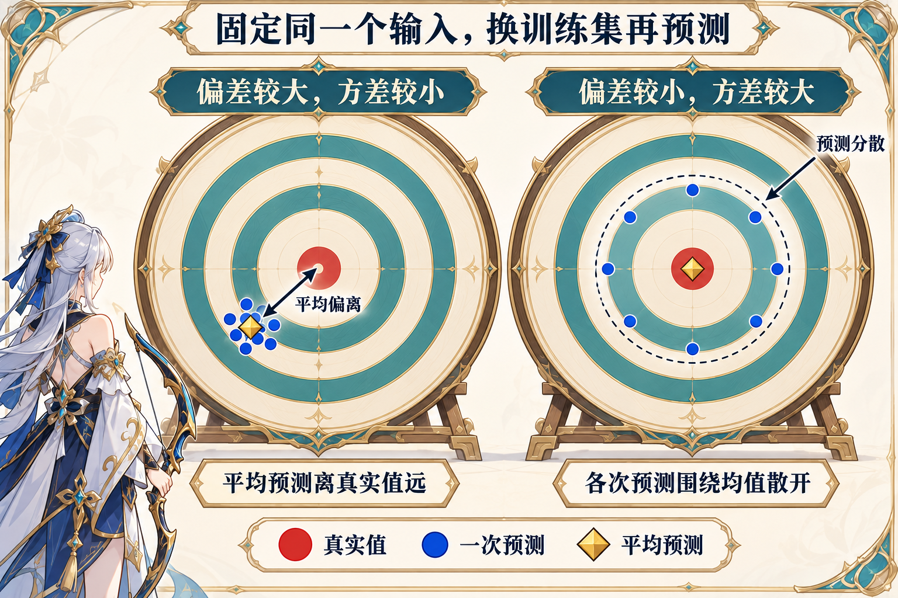
进一步：用多个模型降低波动。回归取平均，分类可投票或平均概率后分类；用Bootstrap样本分别训练再汇总，即Bagging（自助聚合），第7讲展开。模型错误越相似，降方差的收益越有限，也不能靠平均自动消除共同偏差。靶图仅示意两种组合，偏差与方差也可同时高或低；对照上一页的实际拟合。
第 6 讲 · 模型选择：泛化、诊断与调参
除了偏差与方差，还需考虑噪声。设想反复抽取同样大小的训练集，用同一种方法训练，并预测同一个输入 x。在平方损失下：
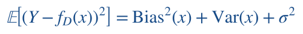
| 误差来源 | 含义 |
|---|---|
| 偏差²（Bias²） | 平均预测偏离真实规律的程度，例如用直线描述弯曲关系。 |
| 方差（Variance） | 更换训练集后，模型对同一输入的预测有多大波动。 |
| 噪声（Noise） | 给定现有输入后，结果仍有不确定性；即使规律已知也无法完全消除。 |
fD 是训练集 D 得到的模型；期望涵盖训练集与新观测的随机性，σ² 是噪声方差。这是理论分解，不是将 p22 的留出 MSE 直接拆成三个可测数值。
💭 模型变得更稳定，是否就意味着预测一定更准确？
不一定。波动变小只说明方差降低；若共同偏差很大，仍可能稳定地预测错误。
推导与交互示意：多伦多大学 CSC311 ↗。
第 6 讲 · 模型选择：泛化、诊断与调参
第3讲用多项式特征让直线变弯。模型允许哪些形状、偏好哪些解，会影响它在有限数据下怎样推广。
归纳偏置（inductive bias）是学习方法对候选规律的假设或偏好。例如线性模型偏好线性关系；权重惩罚偏好较小的系数；图像平移增强表达“位置稍变，类别应不变”的假设。
| 观察到的线索 | 可以比较的改动 |
|---|---|
| 正常收敛后，训练和验证都较差 | 检查有效特征，尝试更合适的表达能力 |
| 换一批训练点，曲线变化很大 | 尝试约束模型，或增加匹配的数据 |
这些是改进假设，需要在相同评价条件下核对；没有一种偏好适合所有任务。
第 6 讲 · 模型选择：泛化、诊断与调参
正则化（regularization）在数据损失之外加入惩罚，限制拟合时的某些自由度。以L2为例：
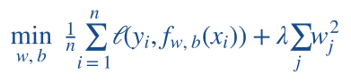
w为权重，b为截距，d为特征数，λ为非负正则化强度。这里惩罚w，不惩罚b；λ越大，权重偏大的代价越高。
代价是训练拟合可能变差，收益可能是对训练细节不那么敏感。验证时仍算预测损失，不把惩罚项加入验证指标。
📉 为什么不能看到训练损失变大，就认定正则化失败？
正则化主动限制训练拟合，是否有用要看未参与拟合数据上的表现。
第 6 讲 · 模型选择：泛化、诊断与调参
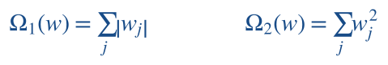
| 惩罚 | 典型效果 | 使用时检查 |
|---|---|---|
| L1 | 部分权重可恰为0，得到稀疏解 | 尺度、相关特征与求解器支持 |
| L2 | 整体收缩权重，通常保留非零权重 | 尺度与惩罚强度 |
稀疏（sparse）在这里表示许多权重为0。某列归零不证明它没有信息，相关特征之间可能互相替代。
⚖️ 一个字段的单位从元换成万元，能直接沿用原来的惩罚强度比较权重吗？
不能直接这样比较。应先统一特征处理，再在相同验证协议中选择强度。
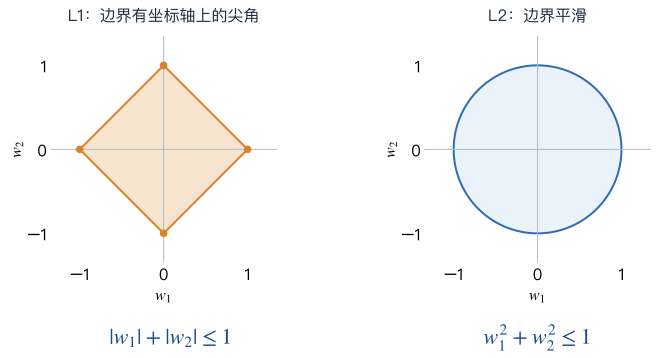
第 6 讲 · 模型选择：泛化、诊断与调参
L1、L2决定惩罚什么；正则化强度决定惩罚多重。这是两项不同的模型设置。
| 表示方式 | 惩罚更强 | 惩罚更弱 |
|---|---|---|
| 目标函数中的 λ | λ 增大 | λ 减小 |
| sklearn LogisticRegression 的 C | C 减小 | C 增大 |
参数（parameter）如权重 w、截距 b，由训练拟合；超参数（hyperparameter）如 C，在训练前指定，再用开发数据比较。
C 很小，模型更倾向收缩权重，可能拟合不足；C 很大，限制更弱，但不保证泛化更好。应看验证表现，而不是让训练分数尽可能高。
👀 如果想加强正则化，应该增大 C 还是减小 C？
减小C。保持数据、预处理、惩罚类型和求解配置相同后，用开发验证比较效果。
λ 与 C 的方向相反；精确换算还取决于损失与惩罚项的缩放约定。
第 6 讲 · 模型选择：泛化、诊断与调参
沿用第2讲的 digits 手写数字数据：1797张图片，每张64个像素特征，预测0–9。固定1077条训练样本、360条验证样本，另有360条预留数据。
同一条标准化＋Logistic回归流程，只改变正则化设置 C：从0.0001到10000，按10倍递增，共9个候选。先读右图：模型是否越贴合训练数据，验证成绩就越高？
训练准确率检查已参与拟合的数据；验证准确率检查没有参与本次拟合的数据。两者使用同一种指标。
👀 如果训练准确率已经100%，验证准确率却没有继续提高，你会继续增大C吗？
不能只根据训练成绩继续增大C。应检查验证表现和波动，再决定是否改候选。
固定一次划分的实测对照。C越大，正则化越弱；预留数据没有用于本页比较。
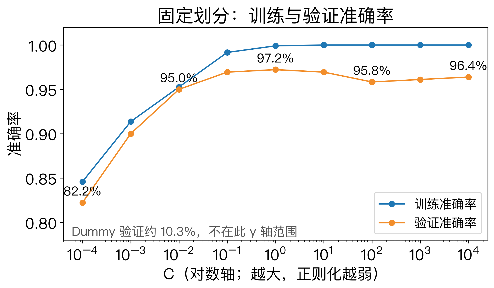
第 6 讲 · 模型选择：泛化、诊断与调参
上一页在固定的一次划分上比较C；现在改用五折验证。验证曲线（validation curve）固定各折划分，只改变一个超参数，这里仍然改变C。
本图C从0.0001到10000按10倍递增。C越大，正则化越弱；训练准确率达到100%后，验证准确率没有继续上升。
学习曲线改变训练样本数；本图改变C。两张图回答不同问题，曲线都只是诊断线索。
👀 训练准确率最高的C，也一定有最高的验证准确率吗？
不一定。模型越灵活可能越贴合训练折，验证表现仍受过拟合和抽样波动影响。
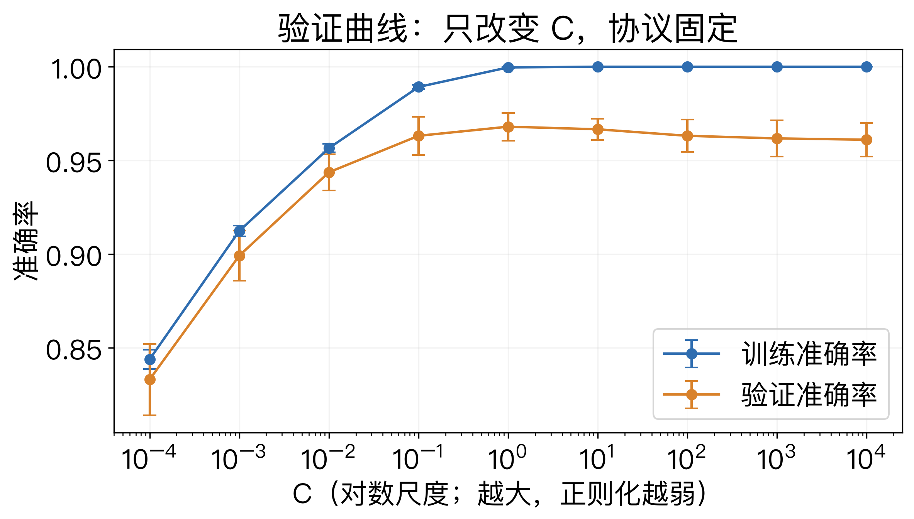
第 6 讲 · 模型选择：泛化、诊断与调参
早停（early stopping）把训练轮次也作为需要验证的选择：监控验证指标，按预设的耐心窗口停止，并恢复此前保存的较好状态。
右图用SGDClassifier.partial_fit连续训练80轮。为观察完整轨迹，本实验跑完所有轮次，再回选已保存状态，不执行patience提前中断；它展示早停依据，没有宣称在最佳点提前知道后续。
本次第69轮验证Log Loss最低约0.291，最后一轮约0.334。训练更久不保证验证损失更低。
⚠️ 只把max_iter设小，就算早停吗？
小上限没有显示“验证指标停止改善并保存最佳点”的过程，可能只是未充分优化。
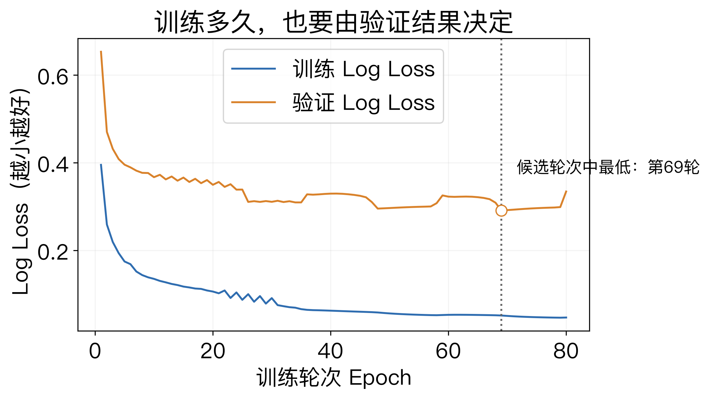
第 6 讲 · 模型选择：泛化、诊断与调参
模型只看得到输入表示。特征工程（feature engineering）改变表示，可能比继续试C更有帮助，处理规则也要验证。
| 输入问题 | 可比较的处理 | 训练时需要学什么 |
|---|---|---|
| 数值有缺失 | 中位数填补 SimpleImputer | 训练列的中位数 |
| 不同列尺度相差大 | 标准化 StandardScaler | 训练列均值与标准差 |
| 类别名称没有数值大小 | 独热编码 OneHotEncoder | 训练中出现的类别及列顺序 |
| 多种列需要不同处理 | ColumnTransformer | 分别拟合各支路，再拼接 |
这些工具将在第7讲Titanic混合字段中完整运行。本讲先掌握共同要求：预处理与模型作为一套方案，在训练折内拟合。
💭 独热编码的类别清单没有用y，也可以提前从验证集里学习吗？
不应提前学习。验证特征参与规则拟合，同样改变了评价条件。
第 6 讲 · 模型选择：泛化、诊断与调参
| 路线 | 如何挑选 | 典型例子 |
|---|---|---|
| 过滤式（filter） | 按训练数据中的统计关系给列打分 | SelectKBest |
| 嵌入式（embedded） | 训练模型时产生筛选效果 | L1权重归零 |
| 包裹式（wrapper） | 反复拟合和验证候选特征子集 | 顺序特征选择 |
SelectKBest(k=25)事先规定“选25列”，但到底选哪25列由fit学习。只要选择参考了标签，它就已参与监督学习。
🎯 如果有10000个纯随机特征，能否找到几个与当前标签恰巧很相关的列？
可能。候选列很多时，有限样本中容易出现偶然相关，但不保证它们能预测新样本。
接下来用随机标签做对照：没有稳定预测信号，却能因错误选列得到高分。
第 6 讲 · 模型选择：泛化、诊断与调参
sklearn官方的随机标签对照：200条样本、10000个随机特征，标签是独立的0/1随机数。没有稳定信号，却得到76%的“污染留出准确率”。
selected = SelectKBest(k=25).fit_transform(X, y)
X_train, X_test, y_train, y_test = train_test_split(
selected, y, random_state=42)错误发生在划分之前：选择哪25列已经参考了后续评价标签。改成先划分、只在训练侧选列，本次回到50%。
🐛 分数降低，为什么反而更可信？
降低移除了评价标签带来的虚假优势；随机标签没有稳定可学信号，有限样本分数不要求恰好50%。
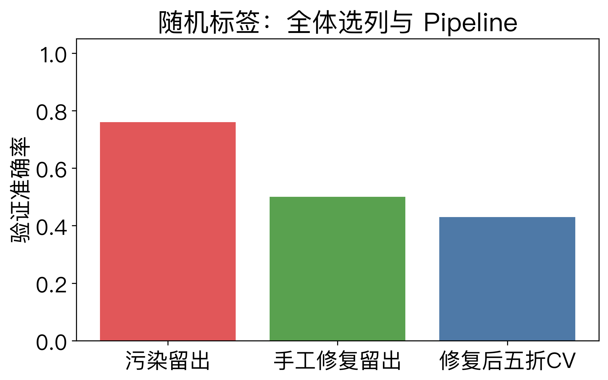
第 6 讲 · 模型选择：泛化、诊断与调参
fit学习规则，transform沿用规则，predict产生预测。无论选列、缩放还是模型参数，都只能从本轮训练部分学习。
search_pipeline = Pipeline([
("select", SelectKBest()),
("scale", StandardScaler()),
("logistic", LogisticRegression(max_iter=1000))])将整条流程交给CV后，每个训练折都重新选列、缩放和拟合模型；验证折只沿用该折的规则。
Pipeline不自动识别事后字段，也不自动隔离用户或时间。这些条件仍要由数据设计保证。
⚡ 先在全开发数据选好列，再只把分类器放进Pipeline，修复了吗？
没有。验证标签仍提前参与了选列，应把选择器也放入Pipeline。
完整可运行流程。筛选列数k与C接下来一起比较。
第 6 讲 · 模型选择：泛化、诊断与调参
下面另设一个联合搜索示例。参数（parameter）如w、b由fit学习；超参数如C和保留列数k，需要预先指定候选范围。划分方式和指标根据任务确定，不能倒过来挑分数最高的协议。
C跨数量级变化时，可先用[0.01, 0.1, 1]这样的对数网格，确定范围后再细化。若最优值落在边界，才有理由考虑扩展范围，不保证扩展一定有收益。
| 本次搜索维度 | 允许的范围 |
|---|---|
| 正则化C | 0.01–1；范围由本次演示预先给定 |
| 选列数k | 16、32、48；每折重新决定具体哪些列 |
参数之间还可能有条件关系，例如L1需要支持它的求解器。先排除无效组合，再安排预算。
第 6 讲 · 模型选择：泛化、诊断与调参
search_pipeline沿用前面的选列＋缩放＋Logistic流程；search_cv3固定为分层三折，打乱且种子42。
grid = {"logistic__C": [0.01, 0.1, 1],
"select__k": [16, 32, 48]}
search_grid = GridSearchCV(
search_pipeline, grid, cv=search_cv3,
scoring="accuracy", refit=False,
return_train_score=True)
search_grid.fit(X_develop, y_develop)网格搜索（grid search）遍历3×3=9组组合；每组在同一分层三折上比较，共9×3=27次拟合。双下划线把参数传给Pipeline中的对应步骤。
refit=False只做搜索。本例预算不含最后重训；若用默认refit=True，选中后还会在全部开发数据上拟合一次。
实测网格代码与预算。这里有意缩小空间展示方法，不宣称已找到全局最优。
第 6 讲 · 模型选择：泛化、诊断与调参
space = {"logistic__C": loguniform(0.01, 1),
"select__k": [16, 32, 48]}
search_random = RandomizedSearchCV(
search_pipeline, space, n_iter=9, cv=search_cv3,
scoring="accuracy", refit=False, random_state=42)
search_random.fit(X_develop, y_develop)随机搜索（random search）在给定空间抽候选。loguniform来自scipy.stats；这里C按对数均匀分布采样，因此会尝试网格之间的值；k从三档中抽取。
两种策略使用相同数据、三折、范围及9次候选预算。27次拟合相同，不保证耗时相同，也不保证哪种得分更高。
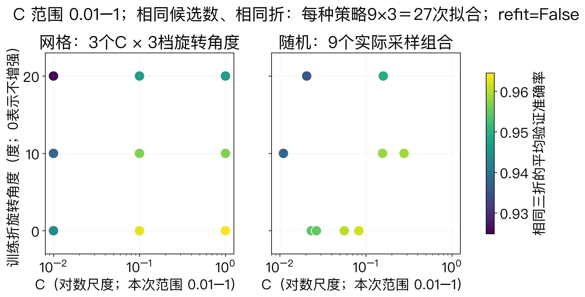
第 6 讲 · 模型选择：泛化、诊断与调参
先看完整候选记录，再看最高分。下面截取本次网格结果的前四行；单次拟合时间依赖机器与运行状态。
| C | k | CV均值 | 折间标准差 | 平均fit时间 |
|---|---|---|---|---|
| 1 | 48 | 96.66% | 0.45个百分点 | 6.0 ms |
| 0.1 | 48 | 96.52% | 0.20个百分点 | 5.0 ms |
| 1 | 32 | 95.20% | 0.45个百分点 | 5.8 ms |
| 0.1 | 32 | 95.13% | 0.20个百分点 | 5.0 ms |
cv_results_还保留每折分数、训练分数和失败信息。近似并列时，可以考虑更简单、更快或更稳定的方案，并说明取舍。
预算账本应写候选数、折数、每次训练资源、实际耗时与失败；不能只写“试了9次”。
⚖️ 同样试9个候选，为何更复杂的模型可能花更久？
单次训练的数据量、模型结构和收敛速度可能不同，所以试验数相同不等于实际成本相同。
两种策略的完整结果。本页展示开发比较，不是最终测试。
第 6 讲 · 模型选择：泛化、诊断与调参
候选很多时，搜索可以利用已有试验信息。贝叶斯优化（Bayesian optimization）用已测候选建立代理关系，再选择有希望或有信息量的新候选；逐次减半（successive halving）先用少量资源筛掉明显弱者，把更多资源给留下者。
它们改变的是“如何分配试验预算”，不是替代验证协议。逐次减半也不等于早停：前者比较候选并淘汰，后者通常在单个训练过程监控轨迹。
💭 候选被提前淘汰，怎样检查资源分配没有把慢热模型误删？
记录资源阶梯、淘汰规则和候选在早期资源下是否可比，不能只看最终冠军。
第 6 讲 · 模型选择：泛化、诊断与调参
每个验证分数都带有有限样本的波动。候选试得越多，挑出的最高分越可能同时包含模型优势和抽样运气。
因此，用来挑冠军的分数，不能直接当作冠军的新数据成绩。这类选择导致的乐观偏差，常称选择偏差（selection bias）或赢者诅咒。
| 刚才做了什么 | 当前数字回答什么 |
|---|---|
| 比较多个候选，选最大CV均值 | 这批开发数据更支持哪个候选 |
| 选定后在全部开发数据重训 | 得到最终参数，尚未增加独立评价 |
| 用未参与选择的数据评分 | 估计已确定方案的新样本表现 |
⚠️ 如果反复扩大C范围，直到最大CV均值提高，原来的CV还独立于选择吗？
不再独立。扩大范围本身也受开发分数影响，应把整个选择流程纳入后续评价。
第 6 讲 · 模型选择：泛化、诊断与调参
嵌套交叉验证（nested cross-validation）在选择流程外，再加一层未参与本轮选择的验证。
本次实验：外层5折，内层3折，比较4个C。
每轮只在外层训练块内选C并重训，然后预测外层验证块。
外层5个分数评价的是这套选参流程。不同外层折选出不同C也正常，它们看到的训练样本不同。
🚨 能看完外层结果后继续改候选，再把同一外层结果称为最终独立评价吗？
不能。外层也参与了后续设计，应报告探索过程，并为新方案重新设计独立评价。
逐个外层折的选中C、内层分数和外层分数。5×4×3＝60次内层拟合，另加5次重训，共65次。
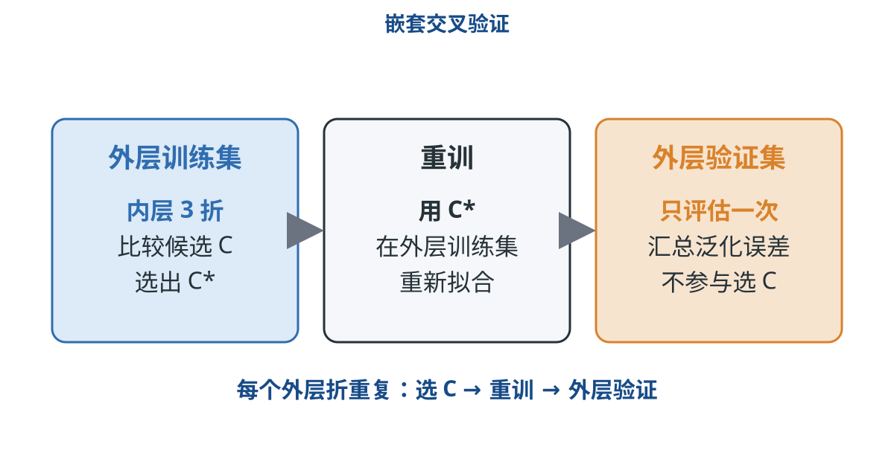
第 6 讲 · 模型选择：泛化、诊断与调参
回看前面的分组划分，本页复现实验：MinMaxScaler将各列按训练范围缩放，再拟合Logistic回归，只改变划分。它不与前面的StandardScaler搜索分数直接比较。以下是划分敏感性检查，不是三种协议的优劣榜。
| 五折协议 | 平均准确率 | 折间标准差 |
|---|---|---|
| KFold不打乱 | 93.1% | 2.7个百分点 |
KFold打乱，random_state=42 | 96.3% | 1.2个百分点 |
按推断块GroupKFold | 92.1% | 2.1个百分点 |
INRIA案例根据标签排列推断出14个相邻块，这些块没有核实为真实书写者身份。按块成绩更低，不说明分组协议就更正确。
⚖️ 可以因为96.3%最高，就认定打乱是最正确的划分吗？
不能。正确协议由未来预测对象决定，较高或较低的分数都不能代替这一判断。
Notebook保留原始推断和三种协议代码。若要报告新书写者成绩，应取得可靠的逐样本身份字段。
第 6 讲 · 模型选择：泛化、诊断与调参
| 观察 | 先核查 | 可验证的下一步 |
|---|---|---|
| 训练与验证都较差 | 基线、标签、特征、优化是否正常 | 改进有效特征或模型表达能力 |
| 训练较好，验证明显较差 | 数据分布、划分和泄漏 | 尝试正则化或更多匹配的数据 |
| C候选差异很小 | 同折差异、成本、可重复性 | 保留简单方案，并明确不确定性 |
| 选中后需要报告性能 | 评价数据是否参与选择 | 独立测试或预先设计嵌套CV |
一次改进应写清：观察到了什么、准备改什么、用哪个未参与拟合的结果检查。避免只为提高一个开发分数反复试到满意。
✍️ 根据digits学习曲线，写出你的一项改进假设和验证方式。
例如固定模型与协议，补充更多匹配数据，再检查验证表现是否改善；答案须引用已观察证据。
第 6 讲 · 模型选择：泛化、诊断与调参
前面讨论的是同一任务中的新样本：类别和预测目标不变，只是这条记录没有参与拟合。若设备、季节或用户群改变，输入的分布可能变化，这叫分布变化（distribution shift）。
再往前一步，目标本身也可能改变。迁移学习（transfer learning）会借用源任务中学到的表示、参数或经验，再在目标任务上适应；它不是“拿来就一定有效”，仍要核对目标分布与任务关系。
💭 新设备上的手写数字，和从识别数字改成识别字母，评价对象分别变了什么？
换设备主要先问输入分布是否改变，仍可能是识别数字；改成字母则预测类别与任务目标都变了，属于新任务。
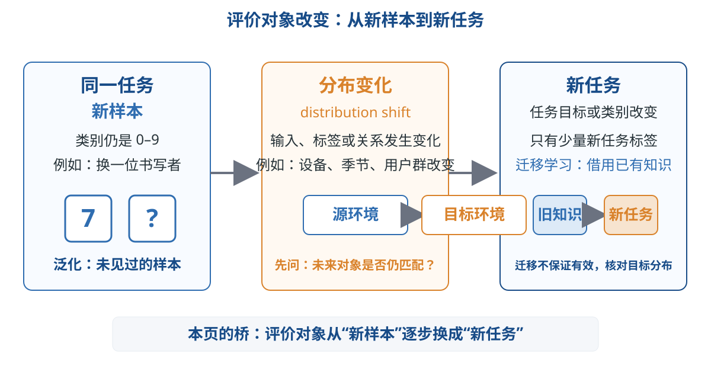
第 6 讲 · 模型选择：泛化、诊断与调参
样本级交叉验证把一行记录轮流放到验证侧，回答“同一任务的新样本能否预测”。如果未来要面对从未见过的用户、患者或设备，就必须把组作为隔离单位；前面介绍的 GroupKFold 已说明这个边界。
任务级评价再换一个单位：一个任务整体进入元训练、元验证或元测试，不能拆到不同阶段。很多相似任务可以看成任务分布（task distribution）；元学习从这些任务共享表示、初始化或适应规则，再问新任务能否用少量信息适应。
⚖️ 把同一任务的支持图片放训练侧、查询图片放测试侧，为什么仍不能证明能适应新任务？
因为同一任务的查询图片仍与支持图片共享任务目标，测试的是已知任务中的新图片，不是未见任务的适应能力。
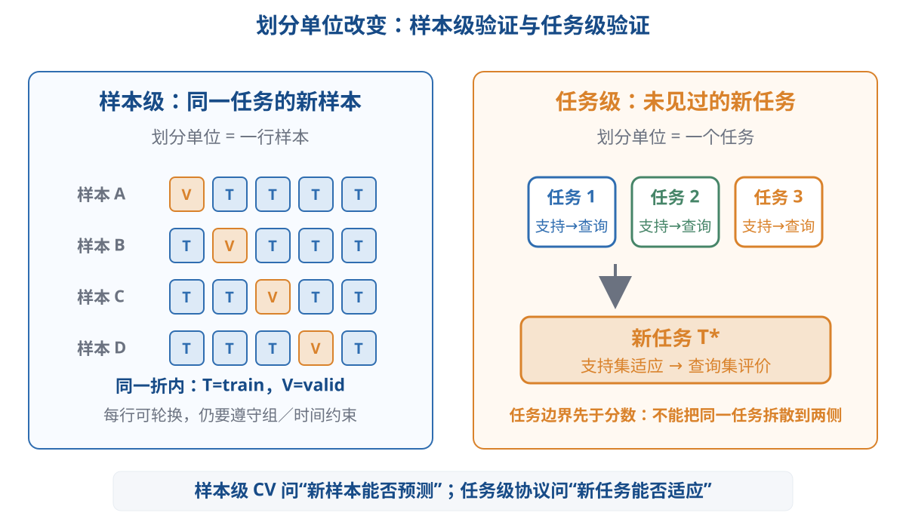
第 6 讲 · 模型选择：泛化、诊断与调参
相关任务也有各自的变化范围，称为任务分布（task distribution）。希望复用的规律应在未来任务中仍然适用。
元学习（meta-learning）在多项训练任务上学习共享表示、初始化或适应规则，让模型面对新任务时少量样本也能开始工作。支持集（support set）用于任务内适应，查询集（query set）的标签在任务内适应时不可见，其损失用途随阶段不同。
元训练阶段，查询损失可以更新共享参数；元验证阶段用查询结果比较候选方案；元测试阶段只允许用支持集适应，查询标签只作最终评价。一个直观的 MAML 原理是：跨任务学习一个“容易适应”的共享初值，用少量梯度步就能适应新任务；复杂推导留作选读。
💭 只把每个新任务切成支持集和查询集，就已经是元学习了吗？
不是。还需要说明多任务如何共同学习共享表示、初始化或适应规则，以及新任务如何使用支持集并用查询集评价。
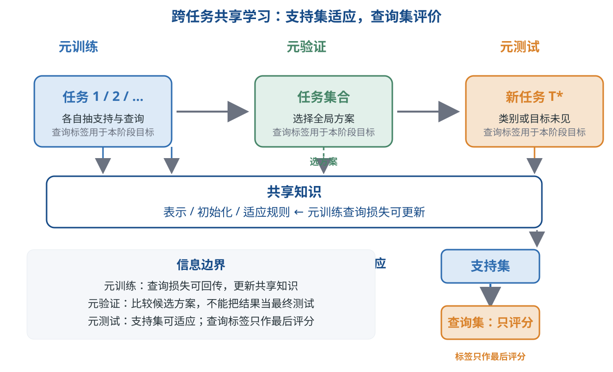
第 6 讲 · 模型选择：泛化、诊断与调参
小样本学习（few-shot learning）关注新任务标注样本很少时怎样预测。5-way 1-shot只是在说一个任务的规格：选 5 个类别，每类给 1 张带标签的支持图片，再用同 5 类的其他图片组成查询集。它描述每类的标注量，不表示整个基准只有 5 张图片。
例如把新任务写成：类别 A–E；支持集各 1 张；查询集各 2 张；先用支持集适应，再在 10 张查询图片上计算准确率。查询标签在评分前保持隐藏。
可先沿用第4讲的kNN 做基线，记录支持样本、查询样本和准确率；这项小实验说明任务协议，不要求实现元训练。
🧮 这个任务有几张支持图片、几张查询图片？查询标签什么时候能看？
支持图片为 5×1=5 张；按本页示例查询图片为 5×2=10 张。查询标签在完成适应、产生预测后才能用于计算准确率。
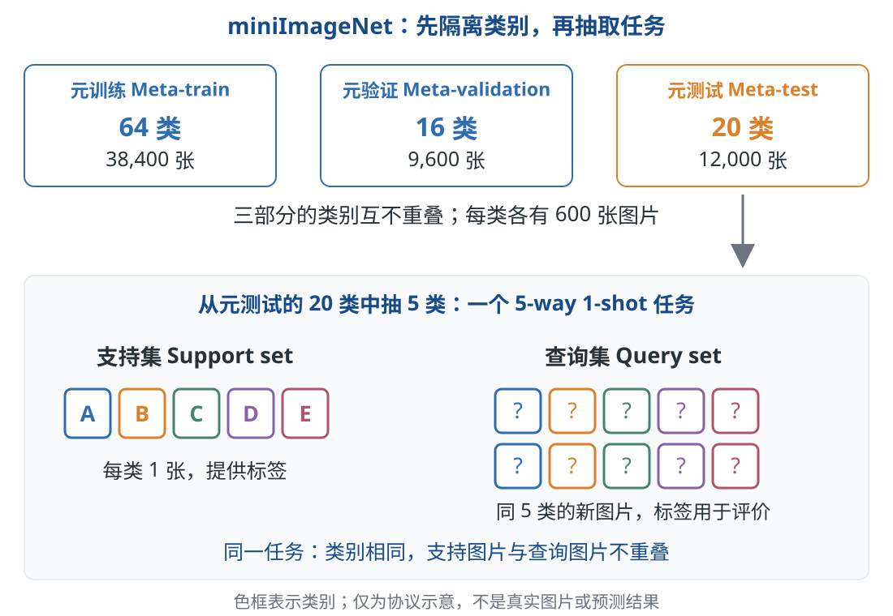
第 6 讲 · 模型选择：泛化、诊断与调参
📝 ① 训练和验证都较差，为何先查收敛？② 网格与随机搜索各27次fit，耗时一定相同吗？③ Pipeline能隔离同一用户吗？④ few-shot为何不自动等于元学习？
①优化不足可能被误判为表达能力不足；②单次资源与收敛速度不同；③不能，要按组划分；④few-shot说明标注量，元学习还要有跨任务共享学习。
课后提交：完整搜索候选表、一次学习／验证曲线解释、一项改进假设和核对方案；指出随机标签的泄漏fit，并为新用户或未来记录选择划分。
选做：复现平方误差分解、嵌套CV或5-way 1-shot任务采样。这些只演示任务协议，不实现元训练。
第7讲换成决策树与集成模型，继续使用诊断、开发选择和独立评价的方法。